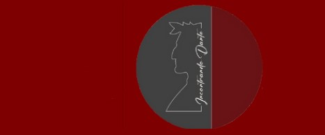

<!DOCTYPE html>
<html lang="it"</
bodytesta>
    <meta set di            margine: 0 auto;caratteri="UTF-8">
    <meta nome="viewport" contenuto="larghezza=larghezza del dispositivo, scala iniziale=1,0">
    <titolo>Incontro Dante</titolo>
    <stile>
        /* 1. Fondo uniforme per tutta la pagina */
        corpo {
            margine: 0;
            imbottitura: 0;
            colore di sfondo: #800000; /* Il tuo colore rosso granato/bordeaux */
            colore: #ffffff; /* Testo bianco per contrasto */
            famiglia di caratteri: Arial, sans-serif;
            imbottitura superiore: 90px; /* Spazio in alto per non coprire il testo sotto la barra */
        }

        /* 2. Barra in alto (mensola) fissa con effetto in rilievo */
        intestazione {
            posizione: fisso;
            superiore: 0;
            Sinistra: 0;
            larghezza: 100%;
            altezza: 70px;
            colore di sfondo: #5d0000; /* Una sfumatura leggimente più scura per stare dallo sfondo */
            visualizzazione: flettere;
            allinea-elementi: centro;
            imbottitura: 0 20px;
            dimensioni della scatola: scatola di confine;
            indice z: 1000;
            
            /* Ombra esterna + sottile linea chiara in alto per fare l'effetto 3D/rilievo */
            ombra a scatola: 0px 4px 12px rgba(0, 0, 0, 0,6);
            bordo inferiore: 1px solido rgba(255, 255, 255, 0,15);
        }

        /* Logo dello stile del */
        .logo {
            altezza: 50px;
            larghezza: auto;
            raggio di confine: 5px; /* Angoli arrotondati (opzionale) */
            /* Ombra sottile attorno al logo per staccarlo dalla mensola */
            ombra a scatola: 0px 2px 5px rgba(0, 0, 0, 0,4);
        }

        /* Contenitore per il resto della pagina */
        principale {
            larghezza massiccia: 800px;
            margine: 0 automatico;
            imbottitura: 20px;
            allineamento del testo: centro;
        }
    </stile>
</testa>
<corpo>

    <!-- Mensola superiore fissa -->
    <intestazione>
        <!-- Sostituisci "logo.png" con il nome esatto del tuo file immagina caricato su GitHub -->
        
    </intestazione>

    <!-- Contenuto del sito -->
    <principale>
        <h1>Benvenuto su Incontrando Dante</h1>
        <p>Scorrendo la pagina vedrai che la barra in alto con il logo rimane sempre in rilievo!</p>
    </principale>

</corpo>
</html>
